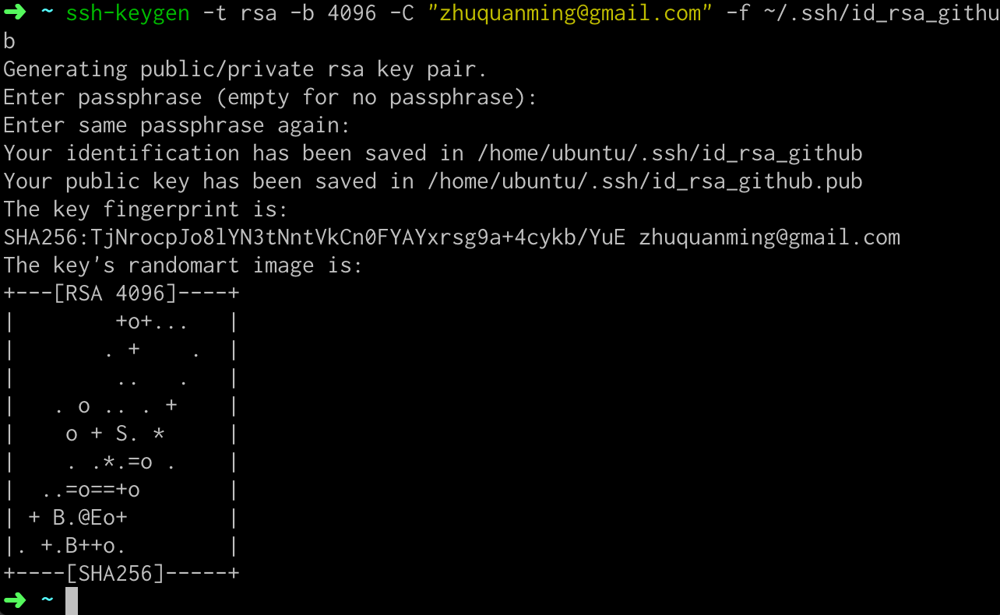
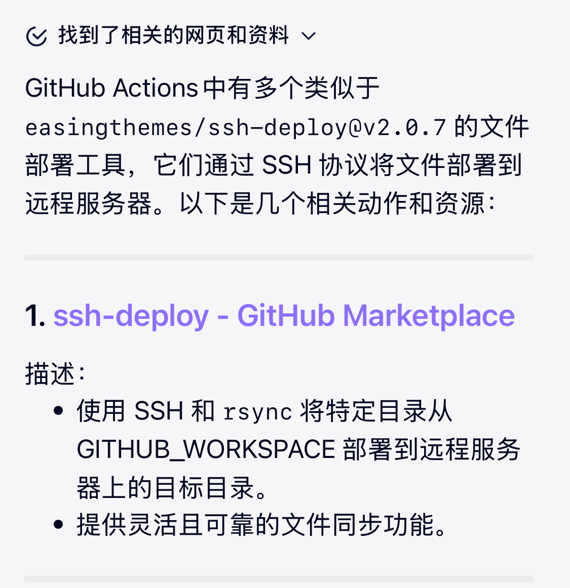

搞定博客的自动发布
之前的手动shell script发布要终结了
Github, Deploy, Action
手动发布台辛苦了，今天就在AI的加持下，迈向自动发布吧。
问: 我已经配置号服务器，只要发布内容放入服务器www文件夹即可正常浏览。我 也配置号了quarto，每次渲染好的发布内容都放在本地项目文件夹publish中。我 已有GitHub账号。现 在请指导我将publish同步到github中，然后让github自动管理和同步内容到我的服务器发布目录www。如 果需要我提供相关的信息和设置，请详细说明。
你做了什么，需要ai给你什么？输 入，输出，算法（基本步骤），这样ai可以给你更好的回答。所 以你知道的越多，ai越能帮助你，把需要的概念加以命名，ai就更好第引用回复了。
AI回答: 好的！以 下是如何将 Quarto 渲染生成的 publish 文件夹内容自动同步到 GitHub，并通过 GitHub 将内容部署到服务器的完整步骤。我 们将逐步指导您完成从 Git 到服务器的自动化流程。
以下是实现目标的完整流程：
创建 GitHub 仓库并上传
publish文件夹的内容。本地初始化 Git 仓库并推送到 GitHub。
在服务器上设置 SSH 私钥/公钥，允许 GitHub 访问服务器。
配置 GitHub Actions 自动同步内容到服务器的
www目录。
如果需要任何具体信息（如服务器 SSH 配置等），请根据提示提供相关信息。
Step 1: 创建 GitHub 仓库
登陆 GitHub，在右上角点击 “+”，选择 “New repository”。
创建一个新的仓库：
Repository name: 输入仓库名称（例如
my-quarto-site）。确保仓库的 Visibility 选择为 Public 或 Private（根据需求）。
不要初始化
README文件或添加.gitignore文件。
创建成功后，记下仓库的 Clone 地址（通常是
https://github.com/yourusername/my-quarto-site.git或用 SSH 格式）。结果: 顺利完成 git@github.com:ming-git/adp.git
Step 2: 初始化本地 Git 仓库并推送到 GitHub
现在需要将您的 Quarto 项目的 publish 文件夹同步到 GitHub 仓库。
打开您的终端或 RStudio 的终端面板，并进入 Quarto 项目目录：
cd /path/to/your/project进入渲染生成的
publish文件夹：cd publish初始化一个 Git 仓库：
git init添加所有内容到 Git 仓库并提交：
git add . git commit -m "Initial commit of Quarto publish content"添加远程仓库地址： 使用 HTTPS：
git remote add origin https://github.com/yourusername/my-quarto-site.git或者使用 SSH（如配置了 SSH 密钥）：2024-12-07 17:25:55 使用该方式
git remote add origin git@github.com:yourusername/my-quarto-site.git推送到 GitHub 仓库的
main分支：git branch -M main git push -u origin main
此时，您的 publish 文件夹中的所有内容应该已经成功推送到 GitHub 仓库。
2024-12-07 17:29:23 check ok
Step 3: 设置服务器的 SSH 配置
为了让 GitHub 可以自动将内容同步到您的服务器，需要设置 GitHub 的访问权限，通过 SSH 密钥 将 GitHub 和服务器连接。
1. 配置服务器上的 SSH 密钥：
登陆服务器（通过 SSH 登录）。在 服务器终端执行以下命令，检查是否已存在 SSH 密钥：
ls ~/.ssh/id_rsa如果不存在，创建一个新的单独的 SSH 密钥对：
ssh-keygen -t rsa -b 4096 -C "zhuquanming@gmail.com" -f ~/.ssh/id_rsa_github
按要求输入路径（或按 ENTER 直接使用默认路径），设置密码可选。
将生成的公钥复制到剪贴板：
cat ~/.ssh/id_rsa_github.pub复制终端输出的内容。
2. 添加公钥到 GitHub：
登陆 GitHub，点击右上角头像，进入 Settings(账号settings)。
找到左侧的 SSH and GPG keys，点击 New SSH key。
添加
.ssh/id_rsa_github.pub的内容到 GitHub，并点击保存。修改服务器ssh config file
编辑或创建 SSH 配置文件，告诉 SSH 使用正确的密钥文件。
打开或创建文件
~/.ssh/config：vi ~/.ssh/config添加以下内容（将
~/.ssh/id_rsa替换为你添加到 GitHub 的密钥路径，例如~/.ssh/id_rsa_github）：Host github.com HostName github.com User git IdentityFile ~/.ssh/id_rsa_github IdentitiesOnly yes保存退出 (：wq)。
3. 测试 SSH 连接：
回到服务器，测试 GitHub 是否可以访问：
ssh -T git@github.com如果显示如下内容，表示连接成功：
Hi yourusername! You've successfully authenticated, but GitHub does not provide shell access.Step 4: 配置 GitHub Actions 自动化部署
GitHub Actions 是 GitHub 内置的一种工具，用来自动化工作流。在 我们配置后，GitHub 会在每次您推送内容到 main 分支时，自动将 publish 文件夹的内容同步到服务器的 www 目录。
1. 在 GitHub 仓库中创建 Actions 配置文件：
在项目中创建一个
.github/workflows文件夹（如果不存在）。不是在渲染输出目录下喔犯了一个错误，建立在了渲染输出目录下，结果直接被删除了哈, 对于git还是有点陌生，好久不用，之前学习的mosh git教程又完全忘记了。
在文件夹下新建文件
deploy2tclh.yml，并配置以下内容：
name: Deploy to Tencent Lighthouse Server
on:
push:
branches:
- main # 当推送到 main 分支时触发
jobs:
deploy:
runs-on: ubuntu-latest
steps:
# 1. 检出最新代码
- name: Checkout code
uses: actions/checkout@v3
# 2. 使用 rsync 将内容上传到服务器
- name: Sync to server
run: |
rsync -avz --delete ./ user@your-server-ip:/path/to/your/www/
env:
RSYNC_RSH: "ssh -i ~/.ssh/id_rsa"2. 配置服务器访问的私钥：
为了让 GitHub Actions 在服务器上使用 SSH，还需将服务器的 私钥 添加到 GitHub 仓库的 Secrets。
登录 GitHub 仓库，进入 Settings > Secrets and variables > Actions。
账号Setting和项目Setting要区分注意：是在https://github.com/ming-git/adpblog/settings 项目的setting中修改；而不是个人账户的setting （https://github.com/settings/profile）中。浪 费了点时间。
点击 New repository secret，命名为
SSH_PRIVATE_KEY，并将服务器私钥（~/.ssh/id_rsa_github的内容）粘贴进去。将错就错吧本来是tclh，麻烦了就不改写了哈
2024-12-08 07:55:15 恢复到原始的命名
3. 修改 deploy2tclh.yml 引用 Secrets 中的私钥：
更新 deploy2tclh.yml 文件：
- name: Sync to server
run: |
mkdir -p ~/.ssh/
echo "$SSH_PRIVATE_KEY" > ~/.ssh/id_rsa_github
chmod 600 ~/.ssh/id_rsa_github
rsync -avz --delete ./ user@your-server-ip:/path/to/your/www/
env:
SSH_PRIVATE_KEY: ${{ secrets.SSH_TLCH_PRIVATE_KEY }}最大的坑就在这里-AI的拐点
今天以为早上起来就可以搞定，结果无论怎么折腾，都会一堆的错误集中就反映在rsync上，花费了很多的时间去确认ssh的设置是否正确，其实最后发现ssh设置没有问题。
这就是在使用AI中最大的坑，一旦AI没在正确的路上，那么后来很难改出来来，经验告诉我，如果三次他都无法给出正确答案，这时候你就要需要去改变思路了-AI已经在一条不归路上了。在 利用AI编写auotomator的自动化流程中，也有这个感觉-如果AI接连三次给不出正确方案，那多半它后面也就无法自己改出螺旋，这是就是人的价值了，需要人类改变方式，通一个全新的角度给出一个提示，所以这里面人的重要性大概就在这儿吧，我们的价值在于思考，确定方向，而AI完成简单重复，查阅数据补全工艺的工作。
终于成功了
微信里搜索“github action 部署文件到服务器” 看到提到了“easingthemes/ssh-deploy”，感觉这是一个突破点，再看看，是把ssh和rsync打包一起的，看来方向上解决了第一次里直接调用rsync的问题。
马上让ai指令“github中还有哪些类似 easingthemes/ssh-deploy 的文件部署actions？” 。

再接再厉，给她指令
https://github.com/marketplace/actions/ssh-deploy 请参考，重新编写部署代码
name: Deploy to Tencent Lighthouse Server
on:
push:
branches:
- main # 当推送到 main 分支时触发
paths:
- www/** # 仅当 www 文件夹及其子目录或文件发生更改时触发
jobs:
deploy:
runs-on: ubuntu-latest
steps:
# Step 1: 检出代码
- name: Checkout Code
uses: actions/checkout@v3
# Step 2: 执行 SSH Deploy Action
- name: SSH Deploy to Server
uses: easingthemes/ssh-deploy@main
env:
SSH_PRIVATE_KEY: ${{ secrets.SSH_PRIVATE_KEY }}
ARGS: ${{ secrets.RSYNC_ARGS }} # rsync 的参数，确保文件更新同步
SOURCE: ${{ secrets.SOURCE }} # 本地需要同步的文件夹
REMOTE_HOST: ${{ secrets.HOST }} # 目标服务器的 IP 地址
REMOTE_USER: ${{ secrets.USER }} # 用于连接服务器的用户名
TARGET: ${{ secrets.TARGET }} # 服务器上的目标路径AI给吃的hard code - ARGS，SOURCE， REMOTE_HOST， REMOTE_USER， TARGET是直接天上了敏感数据。最 佳实践是在github action的screts里设置再通过${{ secrets.《SECRETS.NAME》 }} 的方式来引用。
Step 5: 测试工作流
回到本地终端，修改您的
publish文件夹的内容（比如新建一个文件或修改现有内容）。提交新的内容到 GitHub 仓库：
git add . git commit -m "Update content" git push origin main到 GitHub 仓库的 Actions 页面，您应该可以看到
Deploy to Server工作流被触发。如果配置正确，内容将自动同步到您服务器的
www目录。
问题排查
如果同步失败，请检查服务器
www目录的路径是否正确。测试
rsync是否能够在服务器和 GitHub Actions 工作流中正常工作。确认 SSH 设置是否正确，
id_rsa可以正常授权访问服务器。
总结
通过上述步骤，您可以实现：
本地 Quarto 渲染生成内容到
publish文件夹。使用 Git 将
publish文件夹内容上传到 GitHub。配置 GitHub Actions，让
www的内容自动部署到服务器的www目录，完成发布的自动化。关于.gitigore的的设置也费了大力气，总是感觉自己理解和实际的输出不一致，以后再聊聊。